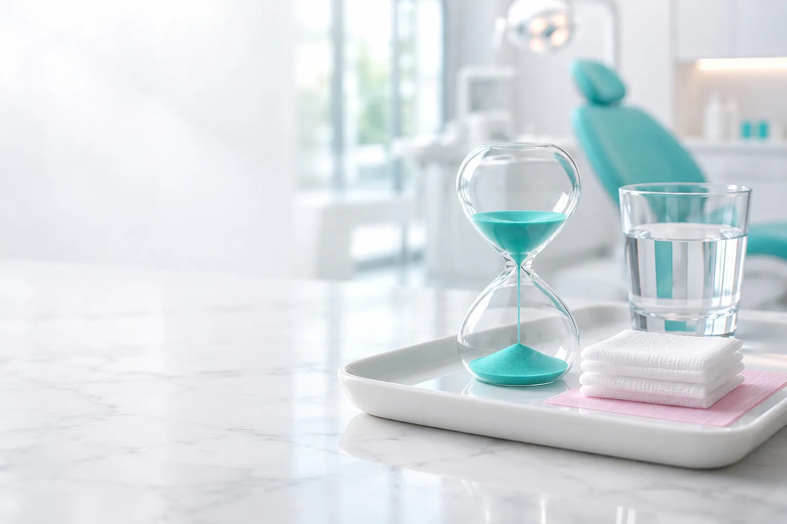
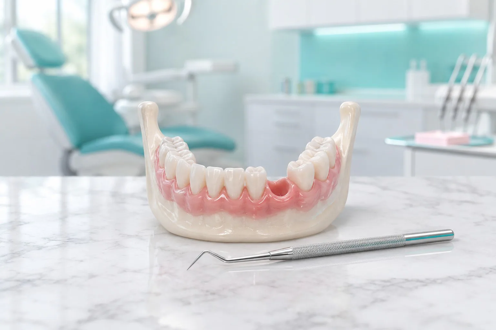
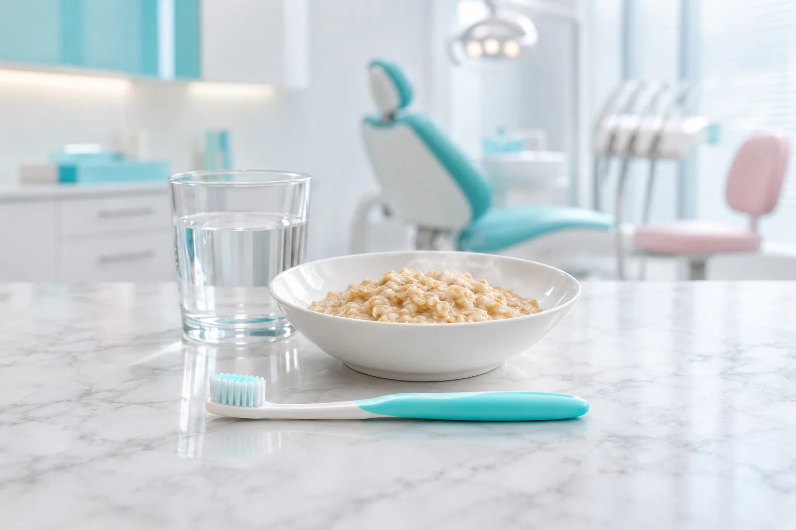
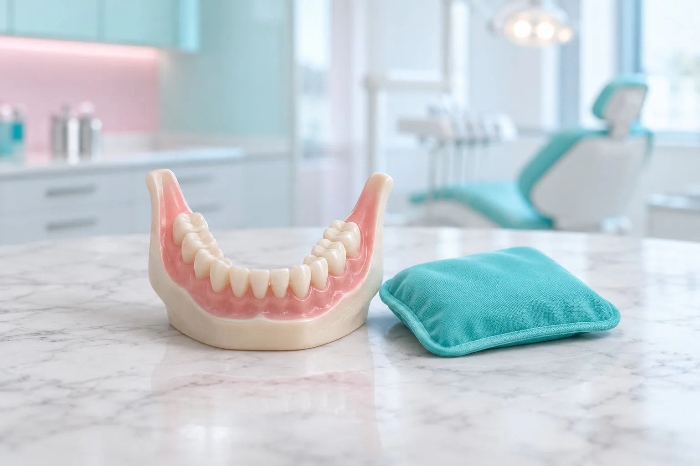

Боль
Сильнее всего, когда проходит анестезия, потом с каждым днём слабее. Обезболивающее только то, что посоветовал врач.

Памятка стоматологии «Вайтис» в Одинцово: как ухаживать за лункой после удаления зуба, что нормально в первые дни и когда нужно показаться хирургу.
Главное правило первых суток: не трогать сгусток крови в лунке, он защищает рану. Если что-то беспокоит, позвоните в клинику, хирург подскажет, нужен ли осмотр. Клиника на ул. Северная, д. 5, корп. 4 (ЖК «Одинбург»), приём ежедневно с 9:00 до 21:00.
Имеются противопоказания. Необходима консультация специалиста.
Лунка заживает сама, если не мешать сгустку крови. Что делать в первые часы и дни после удаления зуба:
Прикусите марлевый тампон и держите 20-30 минут, потом аккуратно выньте. Слюну не сплёвывайте с силой, просто сглатывайте.
Не ешьте, пока не пройдёт анестезия: можно прикусить щёку или губу и не заметить. Пить можно воду комнатной температуры.
Не полощите рот, не трогайте лунку языком, не пейте через трубочку и не курите, чтобы сгусток остался на месте. Холод к щеке через ткань по 15 минут с перерывами.
Ешьте тёплую мягкую еду другой стороной. Зубы чистите как обычно, аккуратно обходя лунку. Не ходите в баню, не грейте щёку и не занимайтесь спортом.
Боль и отёк уходят, десна над лункой затягивается за несколько недель. Если хирург наложил швы, он скажет, когда прийти на осмотр.
Лунка заживает сама, если не мешать сгустку крови. Что делать в первые часы и дни после удаления зуба:
Прикусите марлевый тампон и держите 20-30 минут, потом аккуратно выньте. Слюну не сплёвывайте с силой, просто сглатывайте.
Не ешьте, пока не пройдёт анестезия: можно прикусить щёку или губу и не заметить. Пить можно воду комнатной температуры.
Не полощите рот, не трогайте лунку языком, не пейте через трубочку и не курите, чтобы сгусток остался на месте. Холод к щеке через ткань по 15 минут с перерывами.
Ешьте тёплую мягкую еду другой стороной. Зубы чистите как обычно, аккуратно обходя лунку. Не ходите в баню, не грейте щёку и не занимайтесь спортом.
Боль и отёк уходят, десна над лункой затягивается за несколько недель. Если хирург наложил швы, он скажет, когда прийти на осмотр.
Как идёт заживление, зависит от зуба и сложности удаления. Ориентиры такие:
Сильнее всего, когда проходит анестезия, потом с каждым днём слабее. Обезболивающее только то, что посоветовал врач.
Нарастает первые 2-3 дня и потом спадает. После удаления зуба мудрости отёк обычно больше.
Слюна с примесью крови в первый день бывает часто. Если кровь идёт сильнее, прижмите чистый марлевый тампон на 20-30 минут.
Через 2-4 дня сгусток может покрыться беловатым налётом: это нормально, если боль не усиливается и нет неприятного запаха.
Как идёт заживление, зависит от зуба и сложности удаления. Ориентиры такие:
Сильнее всего, когда проходит анестезия, потом с каждым днём слабее. Обезболивающее только то, что посоветовал врач.
Нарастает первые 2-3 дня и потом спадает. После удаления зуба мудрости отёк обычно больше.
Слюна с примесью крови в первый день бывает часто. Если кровь идёт сильнее, прижмите чистый марлевый тампон на 20-30 минут.
Через 2-4 дня сгусток может покрыться беловатым налётом: это нормально, если боль не усиливается и нет неприятного запаха.
Если боль усиливается на 2-4-й день, из лунки неприятный запах или лунка выглядит пустой, это может быть альвеолит. Позвоните в клинику, не дожидаясь, пока пройдёт само.

Альвеолит после удаления зуба начинается, когда сгусток крови вымывается или не образуется и лунка остаётся открытой.
Риск выше у курящих, после сложного удаления и у тех, кто в первые дни полоскал рот или трогал лунку.
Боль усиливается на 2-4-й день и может отдавать в ухо или висок, из лунки неприятный запах, сгусток не виден.
Хирург осматривает и очищает лунку, при необходимости закладывает лечебную повязку и назначает лечение.
Лечить альвеолит самостоятельно, полосканиями и прогреванием, нельзя. Если курили после удаления, следите за лункой и при боли или запахе покажитесь врачу.

Первые сутки не полощите рот, не трогайте лунку языком и не пейте через трубочку. Несколько дней не курите, не пейте алкоголь, не грейте щёку и не ходите в баню. Полоскания, ванночки и лекарства только те, что назначил врач, в том числе антибиотики.

Удаление зуба мудрости часто сложнее, поэтому и восстановление идёт дольше. Подробнее об операции: удаление зуба мудрости.
Отёк бывает больше, а рот первые дни открывается хуже, особенно после удаления нижней восьмёрки.
Губа, подбородок или язык онемевшие, пока действует анестезия. Если онемение не прошло на следующий день, скажите хирургу.
Несколько дней мягкая тёплая еда другой стороной. Спорт и баня после того, как разрешит врач.
Пустое место лучше не оставлять надолго: соседние зубы смещаются, а кость в этом месте убывает. Когда ставить имплантат, хирург решает по КТ после осмотра.
По КТ зубов хирург видит, хватает ли кости для имплантата.
Заменяет корень зуба, сверху ставят коронку. Подробнее: имплантация.
Протез-бабочка закрывает промежуток, пока заживает лунка.
Если после удаления что-то беспокоит, хирурги клиники на Северной, д. 5, корп. 4 осмотрят лунку и подскажут, что делать.
Сколько болит зуб после удаления?
Сильнее всего в первые сутки, когда проходит анестезия, потом боль с каждым днём слабее и обычно уходит за несколько дней. После удаления зуба мудрости дольше. Если боль усиливается на 2-4-й день, позвоните врачу.
Когда можно есть после удаления зуба?
Через 2-3 часа, когда пройдёт анестезия. Несколько дней ешьте тёплую мягкую еду другой стороной.
Можно ли курить после удаления зуба?
Лучше не курить несколько дней: курение повышает риск альвеолита. Если курили, следите за лункой и при боли или запахе покажитесь врачу.
Чем полоскать рот после удаления зуба?
Первые сутки рот не полощут, чтобы не вымыть сгусток. Дальше полоскания и ванночки только те, что назначил врач.
Что такое альвеолит?
Воспаление лунки, когда сгусток крови вымылся или не образовался. Признаки: боль усиливается на 2-4-й день, неприятный запах, лунка выглядит пустой. Лечит хирург, дома его не вылечить.
Нужно ли пить антибиотики после удаления?
Только если их назначил врач. Сами антибиотики после удаления не принимайте.
Когда можно чистить зубы?
В тот же вечер, мягкой щёткой и аккуратно обходя лунку. Пасту не сплёвывайте с силой.
Сколько заживает лунка?
Десна над лункой обычно затягивается за несколько недель, кость восстанавливается несколько месяцев. Срок зависит от зуба и сложности удаления.
Имеются противопоказания. Необходима консультация специалиста.
Каждая услуга открывается отдельной страницей с ценами, этапами лечения и ответами на вопросы. Нажмите на название, чтобы прочитать.
Беспокоит лунка после удаления? Запишитесь к хирургу
Записаться к хирургуАдрес и как добраться. ул. Северная, д. 5, корп. 4 (ЖК «Одинбург»). МЦД-1 «Одинцово», автобусы и маршрутки до остановки «Комбинат бытового обслуживания», дальше пешком по Северной. Приём ежедневно с 9:00 до 21:00.
Имеются противопоказания. Необходима консультация специалиста.
Оставьте телефон, администратор перезвонит и подберёт врача и удобное время.
Подойдёт КТ, панорама, прицельный снимок или фото плана лечения из другой клиники. Врач посмотрит и ответит в течение рабочего дня.
Врач осмотрит, при необходимости сделает снимок и назовёт цену лечения. Оставьте номер, администратор перезвонит и подберёт время.
Цену лечения вы узнаете до его начала